Setup
Last updated October 4, 2026
Your tracker is two small parts in Apple's Shortcuts app. One starts the timer when your app opens, and one stops it when your app closes. How you add them depends on your iPhone's iOS version.
Not sure which you have? Settings → General → About shows your iOS version.
On iOS 27: two ready-made parts
From Adrift 1.0.2, the two parts come ready-made: Adrift Opens starts the timer and Adrift Closes stops it. You add each one to Shortcuts and turn them on, and then Adrift checks that they work. One pair covers every app Adrift can track. Adrift counts only the apps you've added, and forgets the rest the moment they arrive.
Step 1 of 3
Add the Start part.
In Adrift, tap Add to Shortcuts. Shortcuts will show you this. Tap Add Shortcut, then come back. If Shortcuts says you already have the part, tap Cancel — it's already added.
If Shortcuts opens on its Gallery page instead, come back and tap Open it again. A second open shows the part.
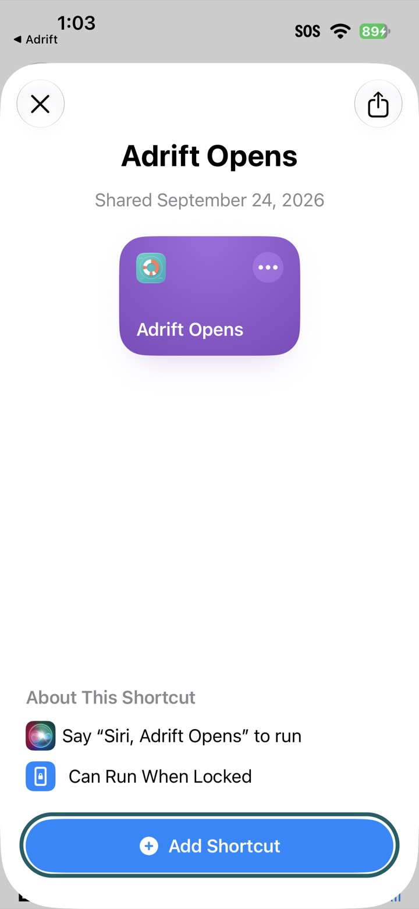
Step 2 of 3
Add the Stop part.
The same as step 1, with the second part: tap Add to Shortcuts, then Add Shortcut, then come back. If Shortcuts says you already have the part, tap Cancel — it's already added.
This second open lands on the Gallery page more often than the first. Come back and tap Open it again.
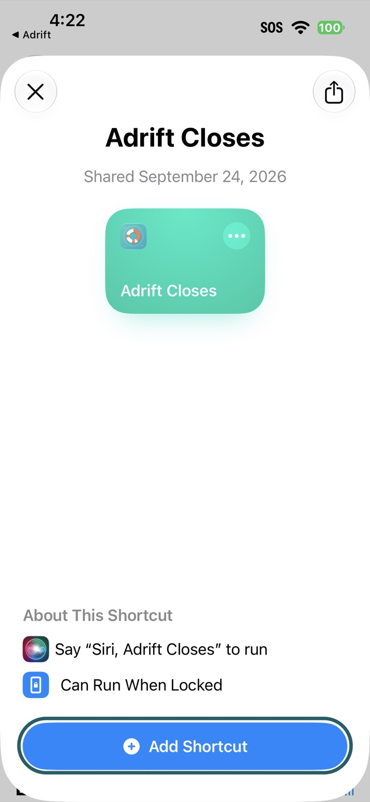
Step 3 of 3
Turn both parts on.
Adrift opens Shortcuts' Automation page. Turn on Adrift Opens and Adrift Closes, then come back.
New parts arrive switched off. Nothing else on that page needs changing.
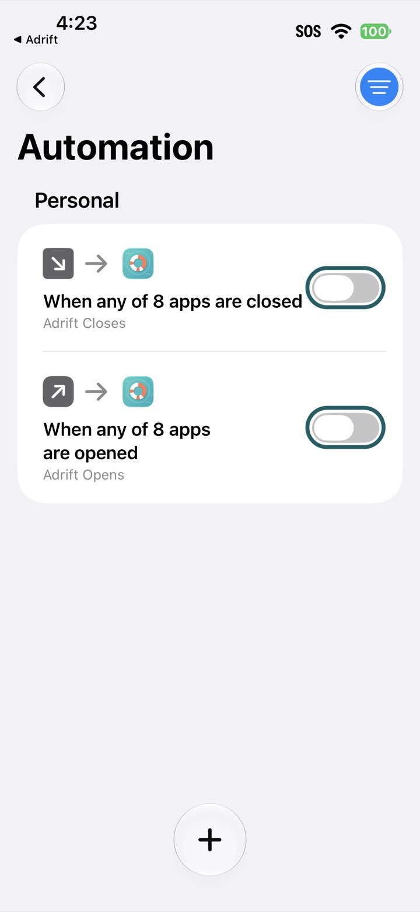
Then the check
Back in Adrift, tap Check both parts. Open your app for about 10 seconds, then come back to Adrift. When both parts reach Adrift, the check says so. Adding and turning on are only steps; the check is what proves the connection.
Good to know on iOS 27
- Your other iPhones. Shortcuts syncs your parts to your other iPhones through iCloud, switched off there. Each iPhone has its own switch, so turn them on there too, from the Automation page. Deleting a part in All Shortcuts on one iPhone deletes it on all of them.
- Built parts yourself before iOS 27? The update renamed them “App”, “App 2”, and so on. They still work. If you add the ready-made parts too, first switch off the parts you built yourself on Shortcuts' Automation page, so each open starts one timer.
- An app you install later. The two parts listen for every app Adrift can track that was on your iPhone when you added them. If Adrift doesn't hear from an app you installed afterward, delete Adrift Opens and Adrift Closes in All Shortcuts, then add them again. The fresh copies pick up every app installed now.
- Locking your iPhone stops the timer, on every iOS version. What to do after an unlock.
Or build the parts yourself
Prefer to build your own? Adrift's cards teach it in Shortcuts' editor: seven taps for the Start part, seven for the Stop part. These parts are for one app each.
The Start part
Step 1 of 14
Adrift opens a new shortcut for you.
If you see New Shortcut, you're in the right place. If the screen asks what you want your shortcut to do, tap Edit at the top right. If you land somewhere else, tap All Shortcuts, then +.
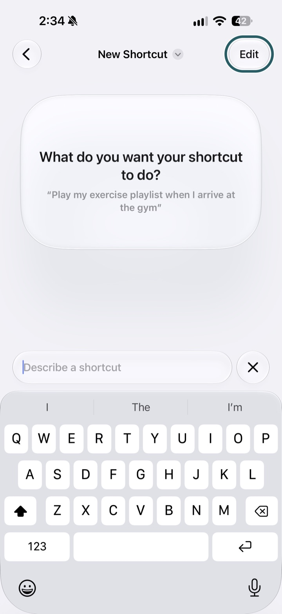
Step 2 of 14
Tap Automation.
It's the first chip under the search field.
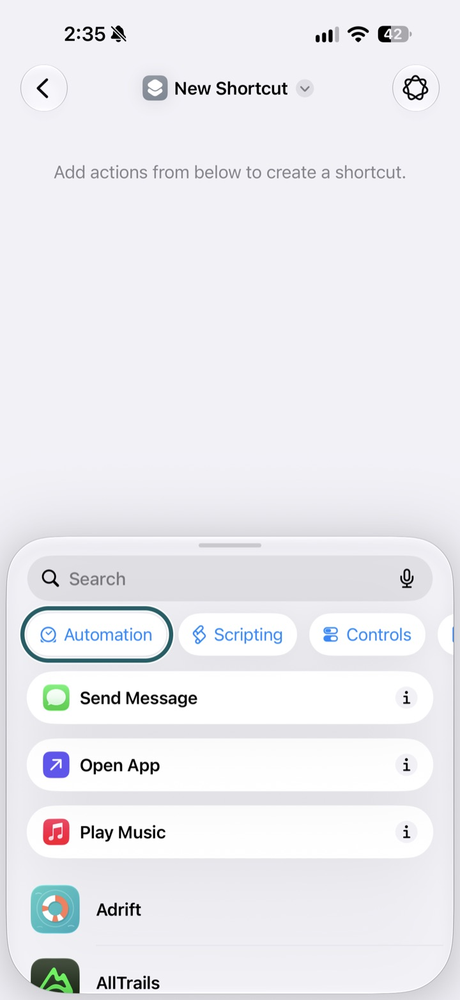
Step 3 of 14
Scroll to Apps, tap App.
A list of your apps opens.
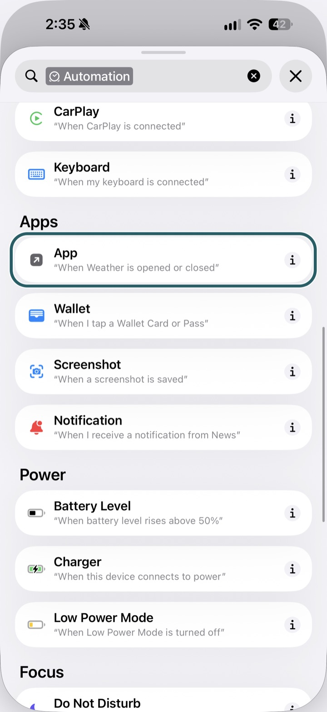
Step 4 of 14
Pick your app, and leave Opened selected.
The block now reads “When your app is Opened.”
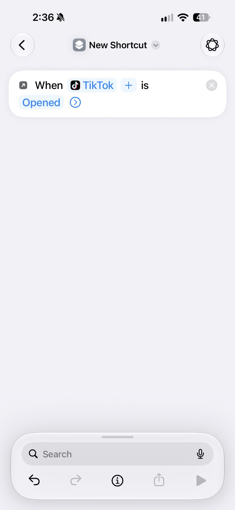
Step 5 of 14
Tap the search bar at the bottom, search Adrift, then tap Start App Timer.
Start, not Stop.
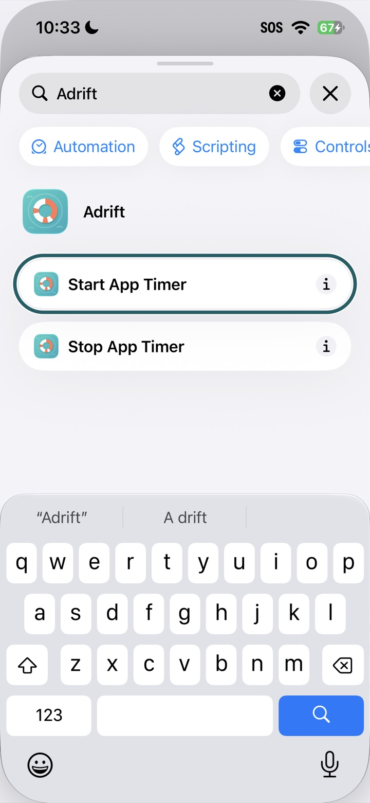
Step 6 of 14
Tap App in the timer step and pick your app again.
Both places name the app.
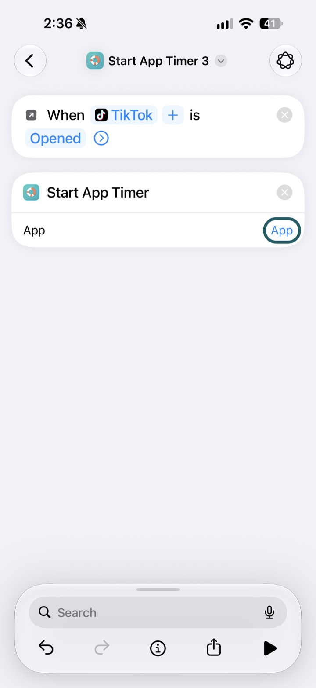
Step 7 of 14
Tap the name at the top and name it after your app, for example “TikTok Start”.
Named parts are easy to find later. Then go back.
The Stop part
Step 8 of 14
Adrift opens a new shortcut for you.
If you see New Shortcut, you're in the right place. If the screen asks what you want your shortcut to do, tap Edit at the top right. If you land somewhere else, tap All Shortcuts, then +.

Step 9 of 14
Tap Automation.
It's the first chip under the search field.
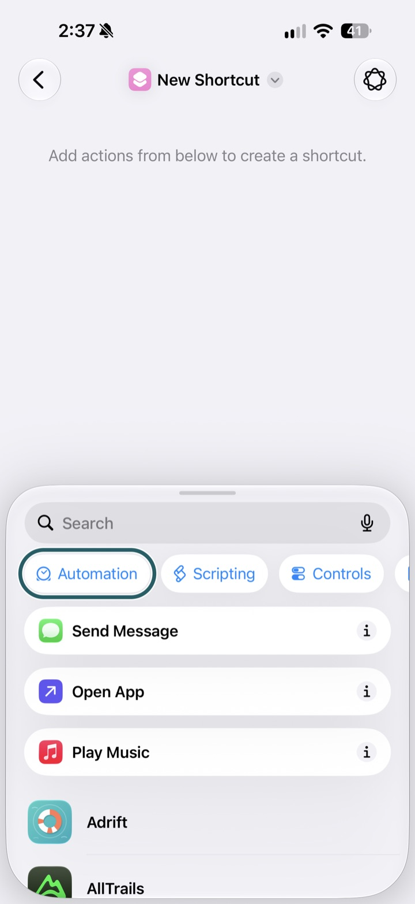
Step 10 of 14
Scroll to Apps, tap App.
A list of your apps opens.

Step 11 of 14
Pick your app, then tap Opened and choose Closed.
This is the important one. The Stop part must read “When your app is Closed.”
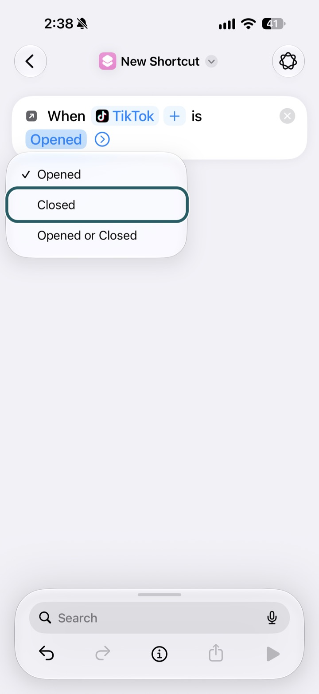
Step 12 of 14
Tap the search bar at the bottom, search Adrift, then tap Stop App Timer.
Stop, not Start.
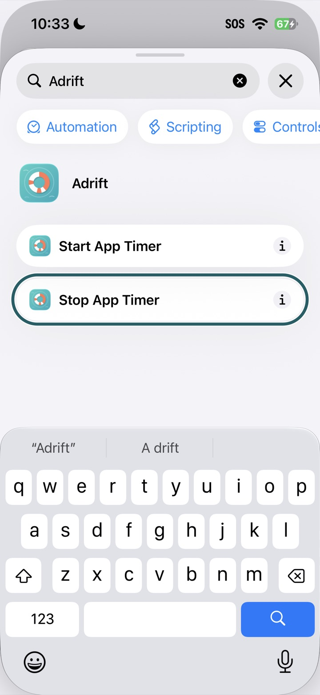
Step 13 of 14
Tap App in the timer step and pick your app again.
Both places name the app.
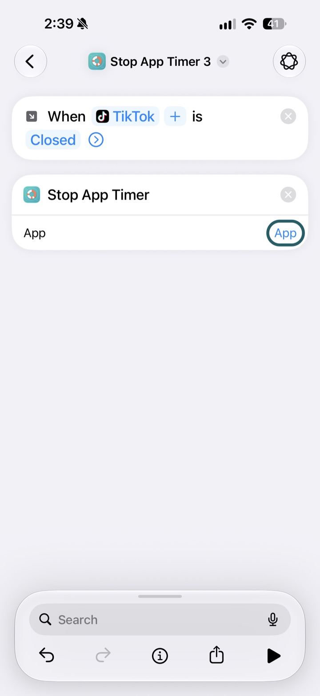
Step 14 of 14
Tap the name at the top and name it after your app, for example “TikTok Stop”.
Named parts are easy to find later. Then go back.
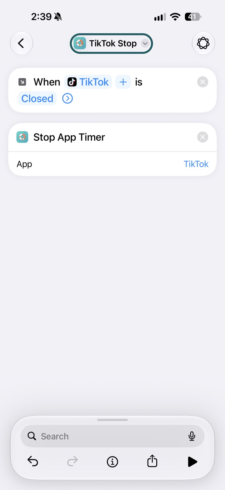
New parts built this way are switched on. Back in Adrift, the check runs the same way: open your app for about 10 seconds, then come back.
Let's find the snag (iOS 27).
Symptoms first, stated as facts. Find yours.
Nothing arrived during the check.
With the ready-made parts, any of these can cause it:
- Both parts may still be switched off on this iPhone. On Shortcuts' Automation page, turn on Adrift Opens and Adrift Closes.
- The parts may not have been added. If Shortcuts showed its Gallery page instead of Add Shortcut, add the parts again.
- Your app may not have been on your iPhone when you added the parts. Delete Adrift Opens and Adrift Closes in All Shortcuts, then add them again.
- Shortcuts couldn't connect when you added a part. Add the parts again once you're online.
- Shortcuts may not be on this iPhone. If your iPhone offers to restore Shortcuts, do that first, then add the parts again.
With parts you built yourself: both may still be switched off (turn them on on the Automation page), or a part may watch a different app, or the App in its timer step may be empty. Each part needs your app in both places. Parts built before iOS 27 may be named “App”, “App 2”; open each one and check its app.
The open landed. The close didn't.
With the ready-made parts: on Shortcuts' Automation page, turn on Adrift Closes. If it isn't listed, or it's on and still doesn't reach Adrift, delete it in All Shortcuts if it's there, then add the Stop part again. Then open your app for about 10 seconds.
With parts you built yourself: your Stop part should be switched on and read “When your app is Closed”, with App set to your app in its timer step.
The close landed. The open didn't.
With the ready-made parts: on Shortcuts' Automation page, turn on Adrift Opens. If it isn't listed, or it's on and still doesn't reach Adrift, delete it in All Shortcuts if it's there, then add the Start part again. Then open your app for about 10 seconds.
With parts you built yourself: your Start part should be switched on and read “When your app is Opened”, with App set to your app in its timer step.
The timer stops the moment it starts.
Both parts reached Adrift, but the stop arrived with the start. Check that your Stop part is set to Closed: open it in Shortcuts, tap Opened (or Opened or Closed), then choose Closed. If you only opened your app for a moment, try again for about 10 seconds.
A signal arrived from a different app.
Adrift was listening for your app, and the signal came from another one. For the check, open the app you're setting up itself. With parts you built yourself, a part may name the wrong app: check the app it watches for, and the App inside its timer step.
Deleting a part.
In Shortcuts, open All Shortcuts, touch and hold the part's tile, then tap Delete, and Delete Shortcut to confirm. iOS says it plainly: the shortcut “will be deleted from all of your iCloud devices.” Delete any copy ending in “2” too. Deleting Adrift Opens and Adrift Closes stops every timer until you add them again.
On iOS 26 or earlier: the walkthrough
Adrift builds the two parts with you in one visit to Shortcuts. In the app, the walkthrough is a floating video that stays on screen while you build. Below is the same walkthrough, written down: five steps.
The opening half
Step 1 of 5
In the sheet Shortcuts opened, search “app”, then tap App.
No sheet showing? In Shortcuts: the middle Automation tab, then +. And skip “Time of Day” — Adrift never needs your schedule.
Step 2 of 5
Pick your app, keep “Is Opened” checked, choose Run Immediately, and switch “Notify When Run” off.
Leave “Is Closed” alone — that's the closing half, two steps away.
Step 3 of 5
Choose Create New Shortcut, scroll down to Adrift.
Not Stop App Timer yet — that one notices you leave.
On older iOS the same button reads “New Blank Automation.”
Step 4 of 5
Pick Start App Timer, set its App to your app — Shortcuts likes to be told twice — then tap Done. The opening half is built.
Don't rename anything — names never matter here.
The closing half
Step 5 of 5
Still in Shortcuts, tap + for the closing half: App → your app → “Is Closed” → Run Immediately → Stop App Timer, App set to your app. Then come back to Adrift.
This time “Is Opened” stays off — noticing you leave is the whole point.
Back in Adrift, the walkthrough is already listening. The rehearsal: open your app for a few seconds and close it — each half checks green as its signal arrives.
Let's find the snag (iOS 26 or earlier).
Symptoms first, stated as facts — find yours.
Nothing has arrived yet.
Both halves live in Shortcuts — one watching “Is Opened”, one “Is Closed”, each running its timer step with App set to your app, Run Immediately chosen, “Notify When Run” off. Already built them? Open each one and back out — that alone often re-links them. Then the rehearsal: open your app for a few seconds and close it.
The open landed — the close didn't.
In Shortcuts, check the closing half: it watches for your app “Is Closed” and runs Stop App Timer with App set to your app — Run Immediately chosen, “Notify When Run” off. Already built? Open it and back out — that alone often re-links it. Then close your app again.
The close landed — the open didn't.
In Shortcuts, check the opening half: it watches for your app “Is Opened” and runs Start App Timer with App set to your app — Run Immediately chosen, “Notify When Run” off. Already built? Open it and back out — that alone often re-links it. Then open your app again.
A signal arrived labeled the wrong app.
A half in Shortcuts names the wrong app — check the app it watches for and the App inside its timer step. Every app needs its own pair; one shared half can't tell apps apart.
Shortcuts asks before every run.
That half was saved with Run After Confirmation, so the timer waits on a tap. Open the half and choose Run Immediately — it runs on its own from then on.
A banner announces every open and close.
That's “Notify When Run,” switched on. The half works; the banner just narrates it. Open the half and switch “Notify When Run” off.
A half looks right and still won't fire.
Open it in Shortcuts and back out without changing anything — viewing it is enough to re-link the action. This is also the fix when one half errors after a reinstall. Rebuilding works too, and it's safe over the old ones.
On every iPhone
If you lock your iPhone, the timer stops. When you unlock back into your app, leave it and open it again — the timer starts again. Why.
Leaving instead? The support page removes the parts and the app in the order that never shows an error: on iOS 27, or on iOS 26 or earlier.
Contact
A snag this page doesn't name — email mschnelbach15@gmail.com and you'll hear back from one of us.